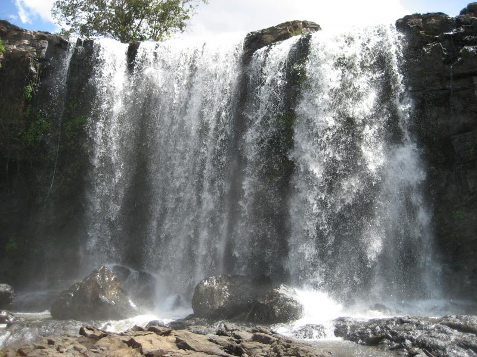

Mondulkiri
Mondulkiri is an eastern province of Cambodia, which is the most sparsely populated province in the whole country although being the largest province in Cambodia. The province is chock full of natural beauty, with thickly forested mountains, powerful waterfalls and the lush green rolling hills of the western side.
Despite the growing deforestation, especially due to the valuable minerals remaining in the deep red, fertile ground, Mondulkiri has still one of the biggest successional woodlands of Cambodia. Except being in Sen Monorom, you'll find deep pure jungle, with a huge variety of flora and fauna. You may also find gigantic and beautiful waterfalls, where you can take an empowering shower, such as the impressive Bou Sraa.
Sen Monorom is the provincial capital and doesn't show up as a typical Cambodian town, while it is the only town the province has to speak of. With approx. 7500 inhabitants, 20 guesthouses, 12 restaurants, 3 bars and no post office it is often compared to American Wild West frontier towns. Concerning the quietness and beauty of Sen Monorom people from other parts of the country move here and therefore the land price doubled from 2006 to 2007.
The town of Sen Monorom is the best base camp for travellers who want to explore the surrounding areas. A quiet but beautiful town nestled into the hills; it has a lot of potential to develop into a centre for non-intrusive eco-tourism. At present, it's very undeveloped, which gives you a feeling of going somewhere off the beaten tourist trail. Add to that the communities of hill tribe people, who are not affected by mass-tourism, as they are in neighbouring Thailand, and you have an area that is very attractive to the adventure traveller.
Also interesting is the variety of languages being used: Khmer, hill tribe languages, Vietnamese and Lao. 80 percent of the population in Mondulkiri is made up of ten tribal minorities, with the majority of them being the Chunchiet from the tribe of the Phnong. The remaining 20 percent are Khmer, Chinese and Muslim Cham. Most of the population lives off the land, planting rice, fruit trees and a variety of vegetables. Others grow, coffee, strawberries, rubber and cashew nuts.
More and more houses are built in the typical Khmer style. Visiting the hill tribes you still can find the traditional Phnong houses. In the houses you can find traditional gongs and big jars, whereby the last ones are said to be more than a thousand years old. There are various sorts of gongs used for different occasions. Jars and gongs are among the most valuable possessions in an indigenous community, whether in traditional, spiritual or material terms. During the Khmer Rouge Regime those objects were buried in hidden places in the jungle and in many cases they still wait in the ground.
Boosra Waterfalls
Locates at Pich Chinda District in 43 kilometer distance from the provincial town by red soil road. The double-drop waterfall is very popular with the locals who use it as a bathing and picnic spot. Its top level is around 10m in height, and the lower level drops down 25m to the gorge. It is in a scenic and pristine setting and offers great photo ops. Nearby is the ethnic Phnong village called Pichinda which has a small guesthouse. Some snacks are available at the falls, but bring food if you would like something more substantial. Then we head northeast to Bou Sra. We never rode north on this road before and I am surprised that right behind the first hill it is getting rougher than most we have seen yesterday. We cross a small river on an improvised bridge and are charged 500 Riel each by a bunch of kids.
Boo Sra is the most beautiful waterfall in Modulkiri and shared into three stages: First stage: The waterfall has 15-meter diameter and 15-meter to 20-meter height in rainy season, and 20-meter diameter and 18-meter to 25-meter height in dry season. The second stage of waterfall has 150-meter distance from the first stage. Second stage: The waterfall has 23-meter diameter and 15-meter to 20-meter height in rainy season, and 20-meter diameter and 18-meter to 25-meter height in dry season. The second stage of waterfall has 150-meter distance from the first stage. Third stage: The waterfall has stronger speed than the second stage. This stage can not be reached because it locates in the thick forest, lacks of transporting mean and is dangerous due to having fierce-wild animals.